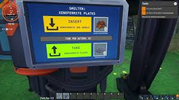
Machines personnalisables
Construis des appareils complexes adaptés à ton style de jeu.
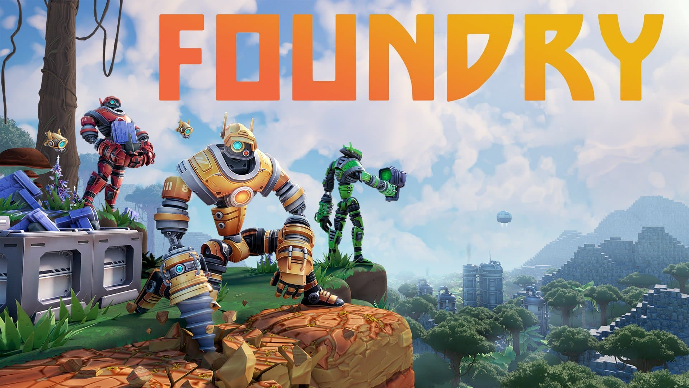
Explore un monde fantastique où construction et mécanique se combinent pour donner vie à des inventions complexes et personnalisables.
Découvre des environnements mystérieux, collecte des ressources uniques, et construis des structures mécaniques pour résoudre des énigmes inventives.
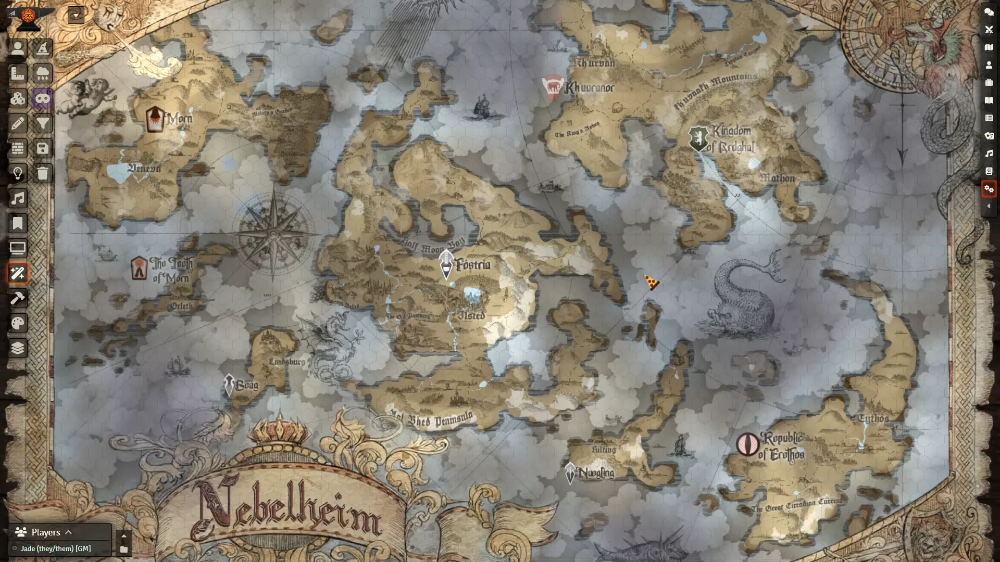

Construis des appareils complexes adaptés à ton style de jeu.
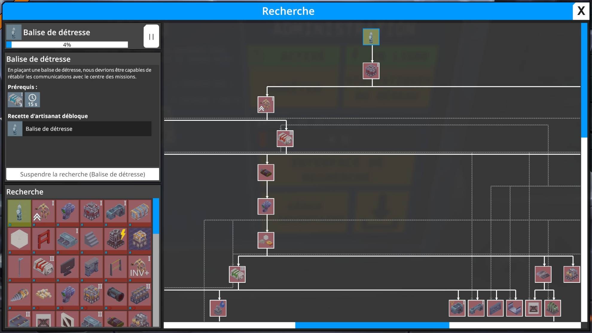
Teste ta créativité avec des puzzles basés sur des mécanismes originaux.
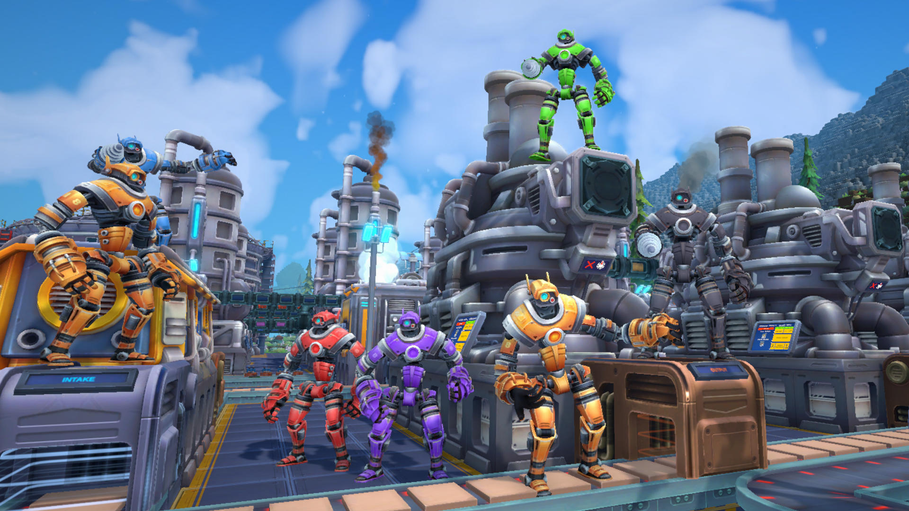
Collabore avec d’autres pour construire et résoudre ensemble.
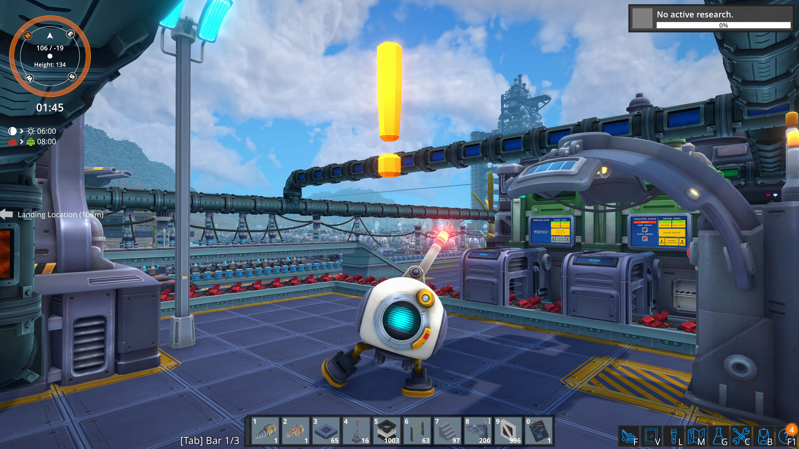
Parcours un univers riche en histoires, paysages et challenges.

Plonge dans l’ambiance magique et mécanique de Foundry. Vidéo non officielle en placeholder.
Lire la vidéo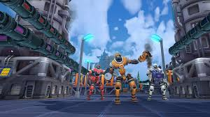
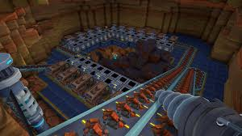
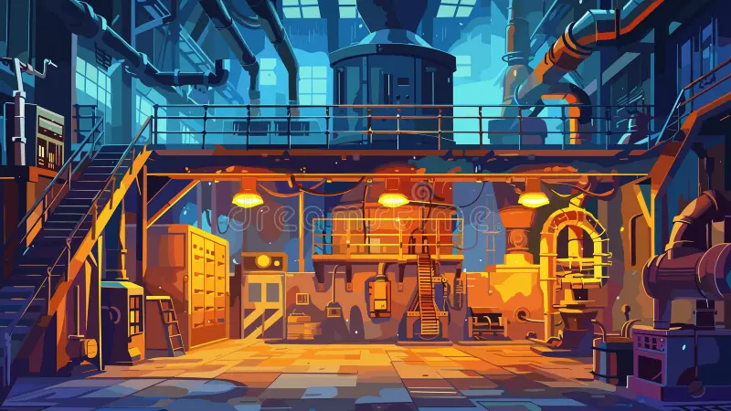
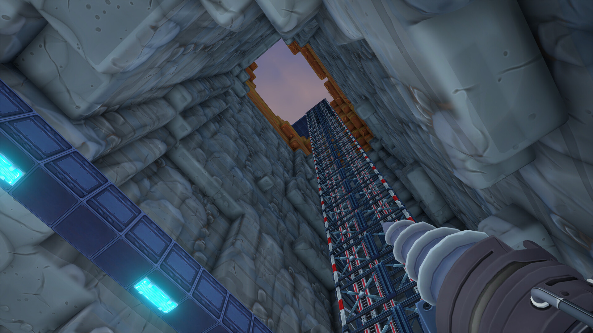
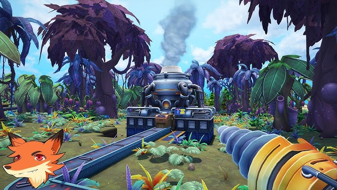
Introduction de nouveaux gadgets mécaniques et améliorations de la physique.
Plus de possibilités de collaboration et de partage des ressources.
Améliorations visuelles et optimisation des performances sur tous supports.
Oui, Foundry supporte une coopération fluide pour plusieurs joueurs.
Oui, le système de craft modulaire permet une grande liberté créative.
Des puzzles mécaniques intégrés dans des environnements variés et immersifs.